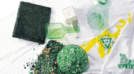
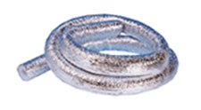
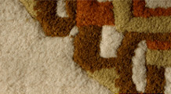

패키징사업
패키징 사업 부문은고객의 더욱 편리하고 풍요로운 생활을 위해
최고 기술과 최상의 품질을 목표로 끊임없이 노력하고 있습니다.
PET용기는 내구성, 내열(압)성, 투명성, 재생성이 우수하여 식음료 및 생활용품 포장재로 사용되며 특유의 무독성,투명성, 보전성, 내약품성을 인정받아 국내외에서 유리 및 알미늄 캔 대체용기로써 널리 각광을 받고 있으며, 특히, 환경호르몬 문제가 없는것으로 판명된 우수한 식품 용기입니다.
삼양은 국내 최저 중량의 먹는 샘물용 preform을 보유하고 있으며, 지속적인 기술개발로 고객의 요구에 가장 적합한 Packaging Solution을 제공하고자 최선의 노력을 다하고 있습니다.
또한, ISO 9001과 FSSC 22000인증을 획득하여 엄격한 품질관리와 위생관리를 실시하고 있습니다.
-
01 안전성
음료용기로서 맛을 변질 시키지 않고 인체에도 무해하며
환경호르몬 등의 발생도 없음 -
02 가스차단성
다른 소재의 플라스틱 용기에 비해
CO2 O2등의 차단성이 뛰어나
음료를 장기간 변질시키지 않고 보존 할 수 있음 -
03 경량성
같은 용량의 유리용기에 비해 15~20배 정도로 가벼워서
운반 및 취급이 용이함 -
04 우수한 성형성
CAN, 유리, 종이나 다른 플라스틱 용기에 비해
성형하기가 쉬워
우수한 형태의 용기생산이 가능함 -
05 투명성
투명하여 내용물의 상품가치를 높이며 사용 후 전량 재활용이 가능하며
유해물질도 발생시키지 않는 등 환경문제 발생도 방지함
삼양은 폐PET병으로 인한
환경오염문제 해결 및 자원절감에 앞장서고 있습니다.
삼양은 PET원료 생산에서부터 PET병의 생산 및 소비자가 사용 후 버린 폐PET병을 수거, 재활용 함으로써
국내에서 유일하게 생산, 유통, 재활용의 완벽한 사이클을 형성하여 폐PET병으로 인한
환경오염 문제 해결 및 자원절감에 앞장서고 있으며, 재활용 기술개발을 통해 재활용의 선진화를 주도하고 있습니다.
폐 PET재활용 제품과 공정
- x 5  T셔츠 1장 또는 방한복 1벌용 보온재
- x 35  슬링핑백 1개용 보온재
- x 36  카페트 0.84m²
- 1. 폐 PET병 압축
- 2. 흙이나 작은 조작 분리 후 세척
- 3. 분쇄 전 색상별 분류 라벨, 마개 선별 및 이물검사
- 4. 분쇄
- 5. 1차 불림 세척, 물과 재생플레이크 분리, 2차세척(탈지제)
- 6. 건조
- 7. 금속 분리